Every palette is a YAML file under
inst/extdata/palettes/, carrying its own colours, labels,
aliases and provenance. This article previews all of them.
Nothing here is hard-coded: the sections below are generated from
energypal_info(), so a palette added to the store appears
without this file being edited.
What is installed
info <- energypal_info()
info |>
select(name, title, type, n, unit) |>
knitr::kable()| name | title | type | n | unit |
|---|---|---|---|---|
| carriers | Energy carriers | discrete | 93 | NA |
| eia | EIA Annual Energy Outlook (approximation) | discrete | 12 | NA |
| epa | EPA greenhouse gas inventory (approximation) | discrete | 12 | NA |
| ipcc | IPCC AR6 WGIII energy supply (approximation) | discrete | 11 | NA |
| owid | Our World in Data energy mix (approximation) | discrete | 12 | NA |
| solaratlas_ghi | Global Solar Atlas GHI | continuous | 28 | kWh/m2/yr |
| solaratlas_pvout | Global Solar Atlas PV output | continuous | 24 | kWh/kWp |
| technologies | Energy technologies and sectors | discrete | 80 | NA |
| windatlas_speed | Global Wind Atlas mean wind speed (approximation) | continuous | 31 | m/s |
The two kinds are handled differently throughout, so it is worth naming them once:
All at a glance
Given several names, energypal_show() draws them as
aligned rows — one per palette, one column per entry. Differences
between published schemes are easier to see this way than in any
table.
energypal_show(discrete)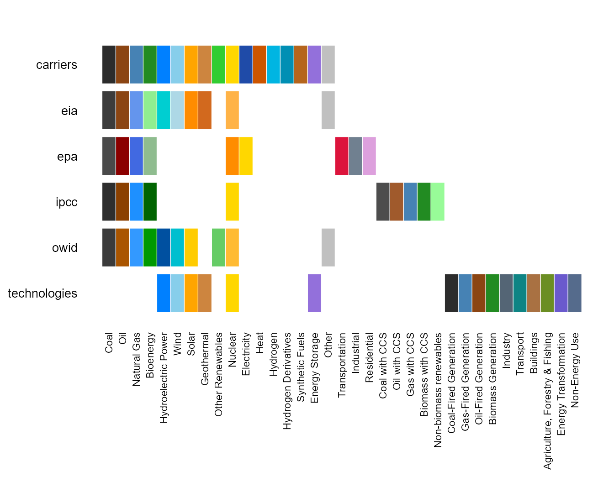
Entries that only some palettes define trail off to the right: IPCC’s CCS variants, EPA’s sector categories, the technologies taxonomy.
Continuous palettes have no entries to align on, so several of them are drawn stacked instead, each with its own range and unit:
energypal_show(continuous)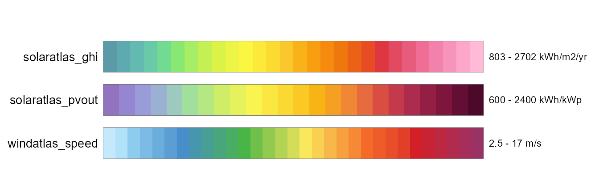
Discrete palettes
A palette shows only the colours its own source publishes. Report
palettes extends: carriers, which gives them the taxonomy —
names, labels, aliases, hierarchy, orderings — but not
its colours. So a carrier a source is silent about comes back unmapped
rather than quietly borrowing the default:
setdiff(names(energypal("carriers")), names(energypal("owid")))
#> [1] "Geothermal" "Electricity" "Heat"
#> [4] "Hydrogen" "HydrogenDerivatives" "SyntheticFuels"
#> [7] "Storage"
# OWID publishes no geothermal series, and says so
energypal_match("Geothermal", palette = "owid", warn = FALSE)
#> original matched color method candidates
#> 1 Geothermal Geothermal <NA> unpublished <NA>
# ...while the inherited alias vocabulary still resolves
energypal_colors("nat gas", palette = "owid", warn = FALSE)
#> nat gas
#> "#3399FF"That is why these palettes are worth choosing between: each is its
source’s own set, not the default with a few edits. Three earlier
palettes (iea, fossil, renewable)
were dropped for failing that test — iea differed from
carriers in zero carrier-level entries, because
carriers was seeded from it.
for (nm in discrete) {
spec <- energypal_spec(nm)
m <- spec$meta
cat("\n### ", if (is.null(m$title)) nm else m$title, " \n", sep = "")
cat("`", nm, "`\n\n", sep = "")
if (!is.null(m$source)) cat("**Source** ", m$source, " \n", sep = "")
if (!is.null(m$url)) cat("**URL** <", m$url, "> \n", sep = "")
if (!is.null(m$extends)) cat("**Extends** `", m$extends, "` \n", sep = "")
if (!is.null(m$license)) cat("\n> **Licence** ", m$license, "\n", sep = "")
if (!is.null(m$attribution)) {
cat("\n> **Attribution** ", m$attribution, "\n", sep = "")
}
cat("\n")
energypal_show(nm, label_style = "default")
cat("\n\n")
}Energy carriers
carriers
Source IPCC 2006 Guidelines, IEA World Energy
Balances, EIA fuel categories
URL https://www.ipcc-nggip.iges.or.jp/public/2006gl/
Licence Colours are energypal’s own, following IEA World Energy Outlook conventions (dark grey coal, blue gas, orange solar, pale blue wind). They are not reproduced from any single published figure. The taxonomy follows the classifications cited per branch as
_taxonomy_source; see dev/references/palette-licences.md
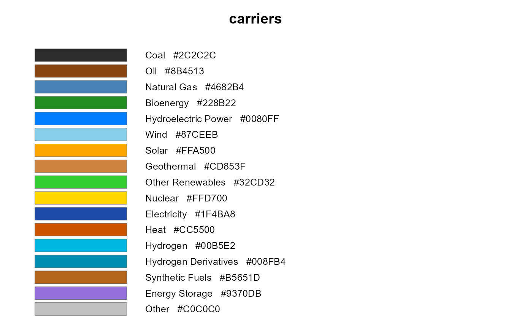
EIA Annual Energy Outlook (approximation)
eia
Source EIA Annual Energy Outlook 2023, Fig. ES-1
“Energy consumption by source”
URL https://www.eia.gov/outlooks/aeo/
Extends carriers
Licence Public domain. A work of the U.S. federal government, not subject to copyright protection in the United States (17 U.S.C. 105). Colours approximated from published figures; see dev/references/COLOR_REFERENCES.md
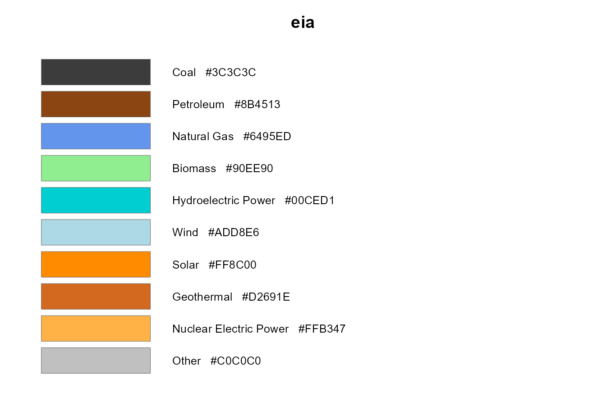
EPA greenhouse gas inventory (approximation)
epa
Source EPA Inventory of U.S. Greenhouse Gas
Emissions and Sinks, Ch. 2 “Trends in Greenhouse Gas Emissions”
URL https://www.epa.gov/ghgemissions/inventory-us-greenhouse-gas-emissions-and-sinks-1990-2021
Extends carriers
Licence Public domain. A work of the U.S. federal government, not subject to copyright protection in the United States (17 U.S.C. 105). Colours approximated from published figures; see dev/references/COLOR_REFERENCES.md
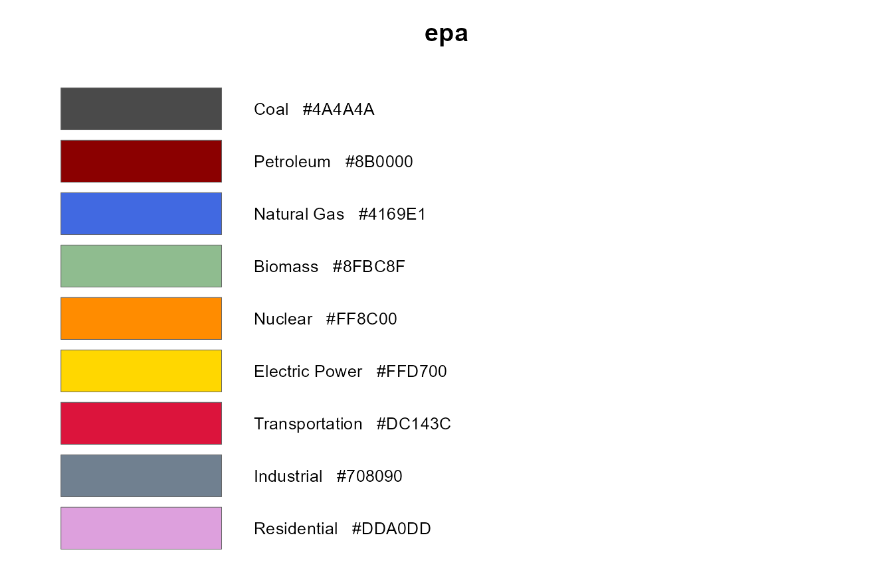
IPCC AR6 WGIII energy supply (approximation)
ipcc
Source IPCC AR6 WGIII, Chapter 3, Fig. 3.8 “Energy
Supply in Illustrative Pathways”
URL https://www.ipcc.ch/report/ar6/wg3/downloads/report/IPCC_AR6_WGIII_Chapter03.pdf
Extends carriers
Licence IPCC material may be reproduced with acknowledgement of the source. Colours approximated from a published figure, not an IPCC specification; see dev/references/report-palettes-survey.md
Attribution Colours after IPCC, 2022: Climate Change 2022 - Mitigation of Climate Change. Contribution of Working Group III to the Sixth Assessment Report of the Intergovernmental Panel on Climate Change, Chapter 3, Figure 3.8. Approximated from the published figure; not an IPCC colour specification.
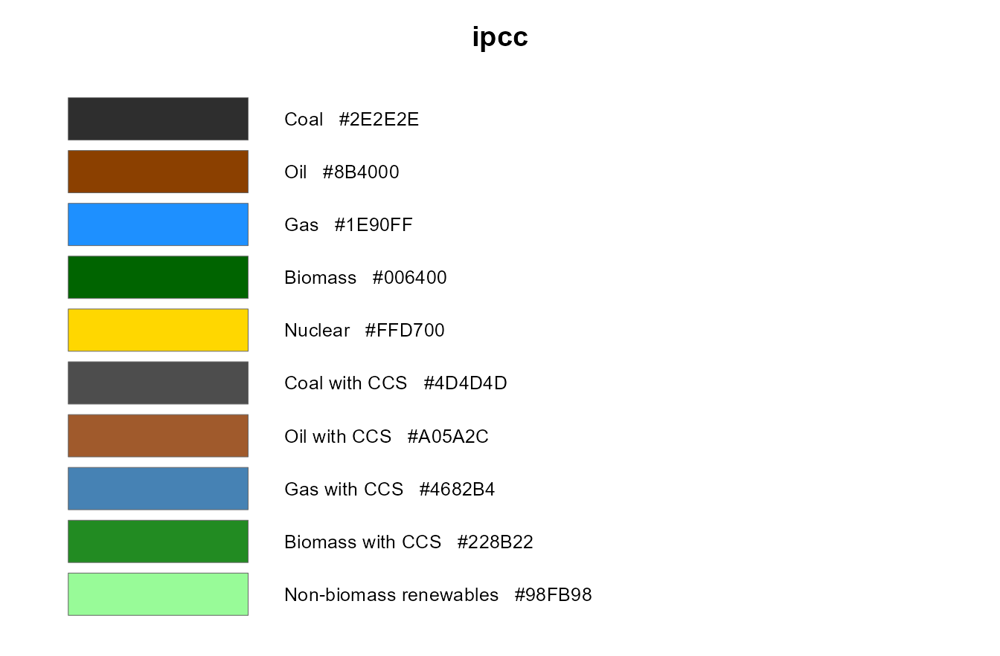
Our World in Data energy mix (approximation)
owid
Source Our World in Data, “Energy Mix” interactive
charts
URL https://ourworldindata.org/energy-mix
Extends carriers
Licence CC BY 4.0. Colours approximated from published figures; see dev/references/report-palettes-survey.md
Attribution Colours after Our World in Data, “Energy Mix” (https://ourworldindata.org/energy-mix), licensed CC BY 4.0. Approximated from published charts; not an official OWID specification.
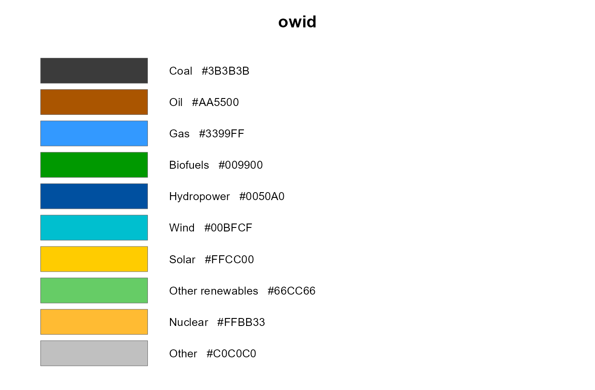
Energy technologies and sectors
technologies
Source IEA Energy Technology Perspectives, IPCC 2006
Guidelines (Vol.2 Energy)
URL https://www.ipcc-nggip.iges.or.jp/public/2006gl/
Licence Colours are energypal’s own, derived from the
carrierspalette so that a technology and the carrier it consumes read as the same family. They are not reproduced from any published figure. The sectoral groupings follow IEA and IPCC conventions; see dev/references/palette-licences.md
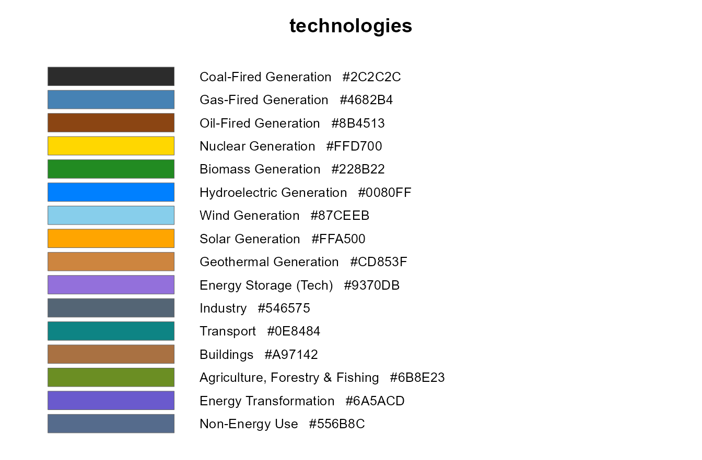
Continuous palettes
Resource maps need a ramp rather than a set of categories. These palettes are an ordered list of stops and declare their own break points and unit, so a binned scale needs no configuration.
for (nm in continuous) {
spec <- energypal_spec(nm)
m <- spec$meta
brk <- as.numeric(unlist(spec$breaks))
cat("\n### ", if (is.null(m$title)) nm else m$title, " \n", sep = "")
cat("`", nm, "` — family `", m$family, "`, measure `", m$measure,
"`, unit `", m$unit, "` \n", sep = "")
cat(length(energypal(nm)), " stops, ", length(brk), " breaks from ",
min(brk), " to ", max(brk), " \n", sep = "")
if (!is.null(m$source)) cat("**Source** ", m$source, " \n", sep = "")
if (!is.null(m$license)) cat("\n> **Licence** ", m$license, "\n", sep = "")
if (!is.null(m$attribution)) {
cat("\n> **Attribution** ", m$attribution, "\n", sep = "")
}
cat("\n")
energypal_show(nm)
cat("\n\n")
}Global Solar Atlas GHI
solaratlas_ghi — family solaratlas, measure
ghi, unit kWh/m2/yr
28 stops, 27 breaks from 803 to 2702
Source Global Solar Atlas 2.0 world GHI poster map
(World_GHI_poster-map_1500x800mm-300dpi)
Licence CC BY 4.0, with the mandatory WIPO/UNCITRAL dispute-resolution addition in the GSA terms of use
Attribution [Data/information/map] obtained from the Global Solar Atlas 2.0, a free, web-based application developed and operated by the company Solargis s.r.o. on behalf of the World Bank Group, utilizing Solargis data, with funding provided by the Energy Sector Management Assistance Program (ESMAP). For additional information: https://globalsolaratlas.info
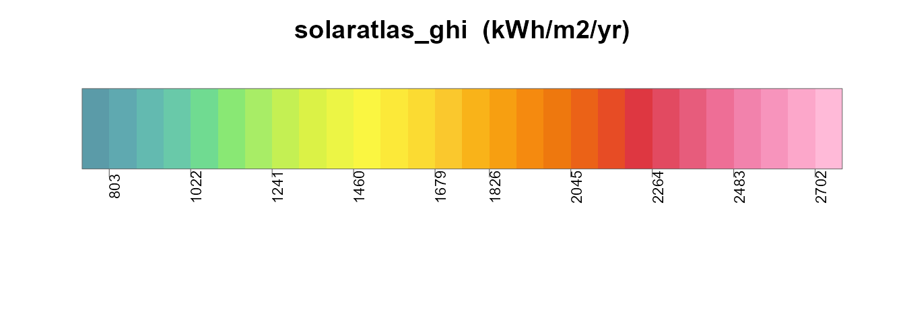
Global Solar Atlas PV output
solaratlas_pvout — family solaratlas,
measure pvout, unit kWh/kWp
24 stops, 23 breaks from 600 to 2400
Source Global Solar Atlas 2.0 world PVOUT poster map
(World_PVOUT_poster-map_1500x800mm-300dpi)
Licence CC BY 4.0, with the mandatory WIPO/UNCITRAL dispute-resolution addition in the GSA terms of use
Attribution [Data/information/map] obtained from the Global Solar Atlas 2.0, a free, web-based application developed and operated by the company Solargis s.r.o. on behalf of the World Bank Group, utilizing Solargis data, with funding provided by the Energy Sector Management Assistance Program (ESMAP). For additional information: https://globalsolaratlas.info
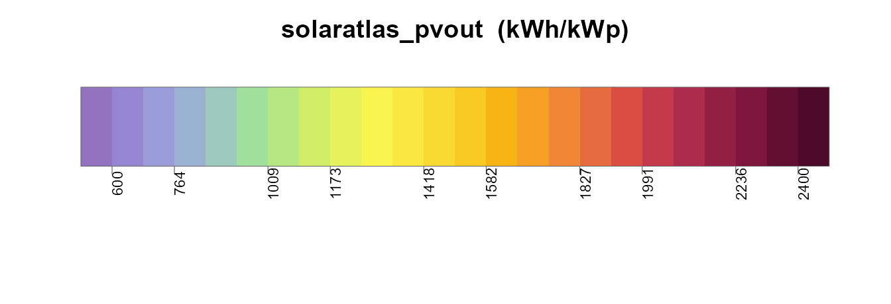
Global Wind Atlas mean wind speed (approximation)
windatlas_speed — family windatlas, measure
speed, unit m/s
31 stops, 30 breaks from 2.5 to 17
Source Approximation. Derived from an earlier version
of the Global Wind Atlas for the merra2ools package (c. 2020); values
recovered by sampling that package’s figure legend, the defining object
(palette.windatlas) having been lost. Atlas version unconfirmed and not
verified against GWA 3 or 4.
Licence CC BY 4.0 IGO, with the mandatory and binding addition in the GWA terms of use
Attribution [Data/information/map] obtained from the Global Wind Atlas, a free, web-based application developed, owned and operated by the Technical University of Denmark (DTU). The Global Wind Atlas versions 3 and 4 are released in partnership with the World Bank Group, utilizing data provided by Vortex, using funding provided by the Energy Sector Management Assistance Program (ESMAP). Cite The World Bank as the data provider and reference ESMAP as the source of funding.
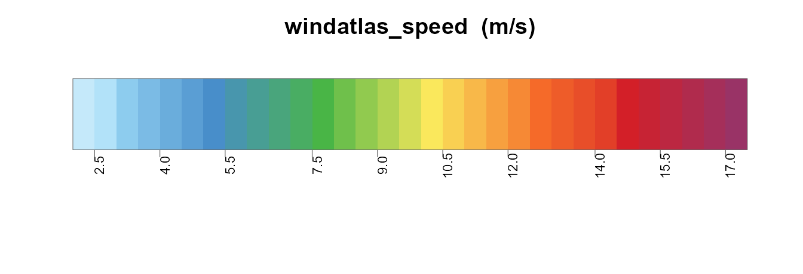
An atlas publishes several quantities and styles each differently, so
each is a separate palette named family_measure. They are
not interchangeable. One member of each family is its default, so the
bare family name resolves to it:
identical(energypal("windatlas"), energypal("windatlas_speed"))
#> [1] TRUE
energypal_info(family = "windatlas") |> select(name, measure, default, unit)
#> name measure default unit
#> 1 windatlas_speed speed TRUE m/sSeveral measures published by the atlases are not included — wind power density and IEC capacity-factor classes, solar DNI, DIF and GTI — because no verified colour source for them was available, and guessing would defeat the purpose of a store whose value is its provenance. They are better added as one reviewable file each than approximated in bulk.
Orderings
Order carries meaning in energy charts, so palettes declare it rather than leaving it to whatever sequence the file happens to use.
energypal_orders("carriers") |>
select(order, kind, n, source) |>
knitr::kable()| order | kind | n | source |
|---|---|---|---|
| carbon_intensity | declared | 9 | IPCC AR5 WGIII, Annex III, Table A.III.2 (lifecycle medians) |
| dispatchability | declared | 10 | IEA World Energy Outlook generation-stack conventions |
| merit_order | declared | 8 | Conventional dispatch-stack ordering; indicative only |
| renewability | declared | 10 | IEA / IRENA energy-mix chart conventions |
| spec | computed | 93 | NA |
| alpha | computed | 93 | NA |
| hue | computed | 93 | NA |
| lightness | computed | 93 | NA |
| chroma | computed | 93 | NA |
The same data under three of them. The sequence changes; the colour of each carrier does not.
# countries ordered most carbon-intensive first, using the palette's own
# carbon-intensity property - a presentation ordering, not an emissions estimate
latest <- owid_energy_mix |> filter(year == max(year))
# one row per carrier that has a figure: a name can appear twice in the table
# (Nuclear is both a group and the carrier inside it), which would fan the join out
intensity <- energypal_table("carriers") |>
filter(!is.na(carbon_intensity)) |>
distinct(carrier = name, carbon_intensity)
rank <- latest |>
left_join(energypal_match(unique(latest$source), warn = FALSE) |>
select(source = original, carrier = matched), by = "source") |>
left_join(intensity, by = "carrier") |>
group_by(country) |>
summarise(ci = weighted.mean(carbon_intensity, percentage, na.rm = TRUE)) |>
arrange(desc(ci))
d <- latest |> mutate(country = factor(country, levels = rank$country))
for (o in c("carbon_intensity", "merit_order", "renewability")) {
print(
ggplot(d, aes(country, percentage, fill = source)) +
geom_col() +
scale_fill_energy(order = o) +
labs(title = o, x = NULL, y = "%") +
theme_minimal() +
theme(axis.text.x = element_text(angle = 45, hjust = 1))
)
}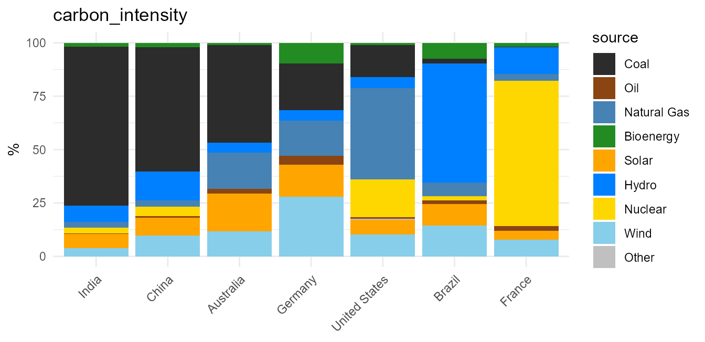
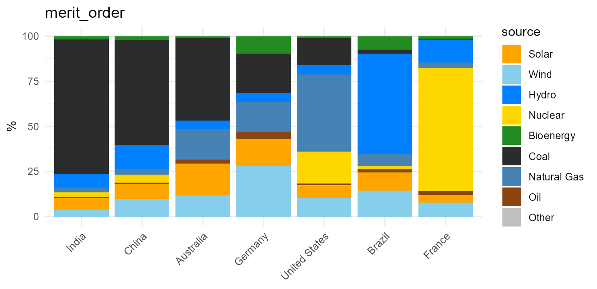
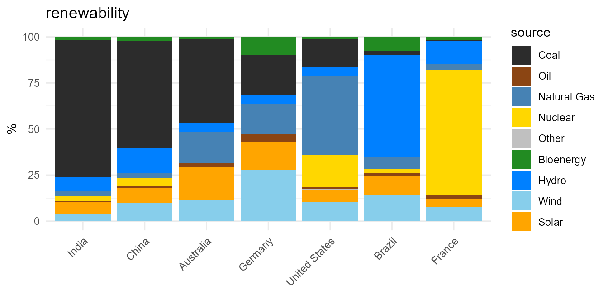
An ordering declared at carrier level covers the subtypes beneath it: an entry the sequence does not name sorts with its nearest named ancestor, so each fuel’s family stays together.
energypal_table("carriers", order = "carbon_intensity") |>
select(name, type) |>
head(10)
#> name type
#> 1 FossilCoal carrier
#> 2 Anthracite subtype
#> 3 Bituminous subtype
#> 4 SubBituminous subtype
#> 5 Lignite subtype
#> 6 Coke subtype
#> 7 OtherFossilCoal subtype
#> 8 FossilOil carrier
#> 9 Crude subtype
#> 10 ResidualFuelOil subtypeOrderings, and the figures behind them, are for presentation only. They arrange legends and chart series. They are indicative values, not validated figures, and must not be used in calculations. Every declared ordering and numeric property carries a note saying so, which travels with the data:
tab <- energypal_table("carriers")
attr(tab$carbon_intensity, "note")
#> [1] "Presentation only - for ordering and shading. NOT a model input. These are indicative lifecycle medians across a wide reported range; use figures from your own scenario or inventory for any calculation.\n"
attr(tab$carbon_intensity, "source")
#> [1] "IPCC AR5 WGIII, Annex III, Table A.III.2 (lifecycle medians)"Shades within a carrier
Plant-level data repeats a carrier many times over — a fleet has
several coal units and a dozen wind farms.
energypal_gradient() spreads one palette colour into
distinct tones so those clusters stay apart without losing the fuel.
base <- energypal("carriers", n = 10)
n_sh <- 5
op <- par(mai = c(0.2, 1.15, 0.4, 0.2))
plot.new()
plot.window(xlim = c(0.5, n_sh + 0.5), ylim = c(length(base) + 0.5, 0.5))
for (i in seq_along(base)) {
sh <- energypal_gradient(base[[i]], n = n_sh)
for (j in seq_len(n_sh)) {
rect(j - 0.5, i - 0.42, j + 0.5, i + 0.42, col = sh[j], border = "white", lwd = 0.6)
}
mtext(names(base)[i], side = 2, at = i, las = 1, line = 0.3, cex = 0.75)
}
title(main = sprintf("%d shades of each carrier", n_sh), cex.main = 0.95)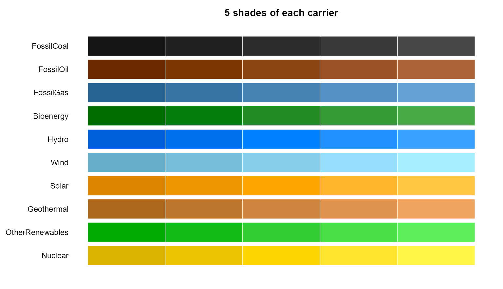
par(op)The middle column is the palette colour; the gradient spreads symmetrically around it in OKLAB rather than only lightening, which is what keeps a bright carrier like Solar from collapsing to one tone.
energypal_colors(gradient = TRUE) applies this to data,
grouping by the carrier each label resolved to:
energypal_colors(c("Coal_1", "Coal_2", "Coal_3", "Wind_N", "Wind_S", "Solar_1"),
gradient = TRUE, warn = FALSE)
#> Coal_1 Coal_2 Coal_3 Wind_N Wind_S Solar_1
#> "#141414" "#2C2C2C" "#464646" "#67AECA" "#A7EFFF" "#FFA500"Grouping by resolved carrier rather than by colour matters where two
entries share a hex code — FossilCoal and
OtherFossilCoal are both #2C2C2C, and grouping
on the colour would merge them into one gradient.
The same chart, four ways
for (p in c("carriers", "eia", "ipcc", "owid")) {
print(
ggplot(d, aes(country, percentage, fill = source)) +
geom_col() +
scale_fill_energy(palette = p) +
labs(title = p, x = NULL, y = "%") +
theme_minimal() +
theme(axis.text.x = element_text(angle = 45, hjust = 1))
)
}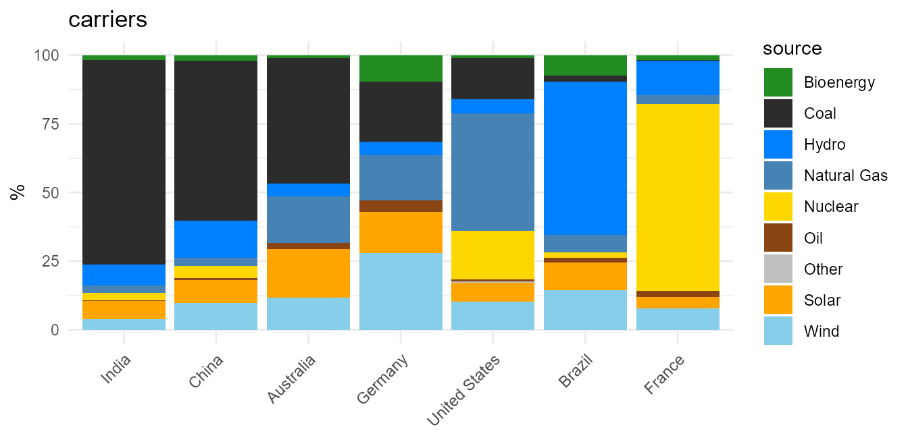
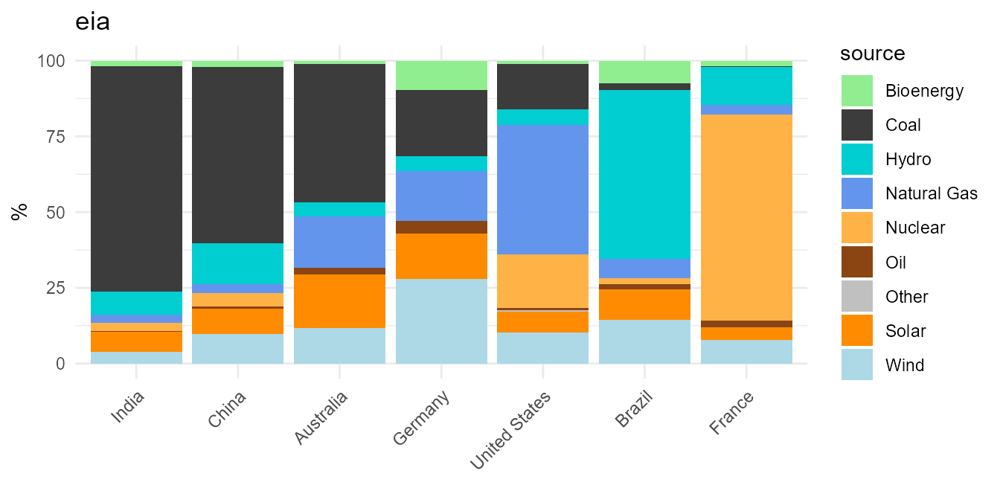
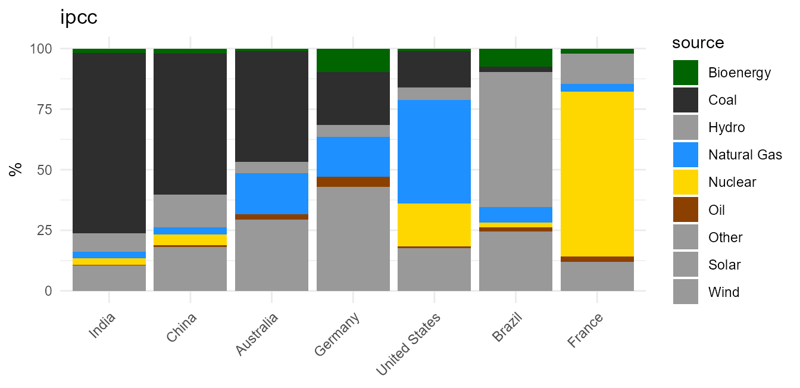
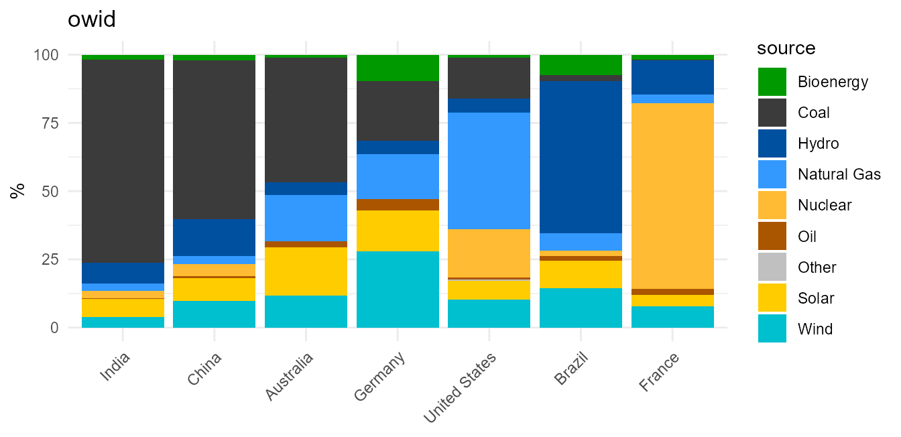
Adding a palette
One YAML file in inst/extdata/palettes/, or anywhere on
disk if you pass file =. No code changes, no registration
in a list, no test edits — the validator tests iterate over the
directory, so a new file is picked up and checked automatically.
meta:
name: myreport
title: "Colours for the 2026 report"
source: "Figure 4.2"
license: "Our own colours" # required: how they were obtained
extends: carriers # optional: inherit labels and aliases
colors:
FossilCoal: "#3A3A3A" # state only what this palette publishes
FossilGas: "#5599CC"extends applies each entry wherever that name occurs in
the parent, at any depth, keeping the labels and aliases it already had
— and only those two entries get a colour. A palette that wants
to be standalone simply omits it.
f <- tempfile(fileext = ".yml")
writeLines(c("meta:", " name: myreport", " license: Our own colours",
" extends: carriers",
"colors:", ' FossilCoal: "#3A3A3A"'), f)
energypal_validate(energypal_spec(file = f))
energypal_colors(c("Coal", "coal power"), file = f) # aliases inherited
#> Coal coal power
#> "#3A3A3A" "#3A3A3A"
energypal_colors("Solar", file = f, warn = FALSE) # not declared here
#> Solar
#> "#999999"Provenance is required
energypal_validate() refuses a palette that does not say
where its colours came from, and one declaring a CC BY licence without
the citation that licence requires. That rule exists because the store
is only worth having if every entry can be traced.
Colours reach a palette one of two ways, and
meta.license always says which: reproduced from a
downloadable Work published under a licence that permits it — the atlas
poster maps — or approximated by eye from a published figure, where the
source publishes no colour specification at all. The second is the
common case, which is why those palettes are titled
(approximation).
Your own palettes are exempt. energypal_register()
validates leniently, and
energypal_validate(..., strict = FALSE) checks structure
alone:
mine <- energypal_create(c(Coal = "#FF0000", Solar = "#00FF00"), name = "mine")
energypal_validate(mine, strict = FALSE)